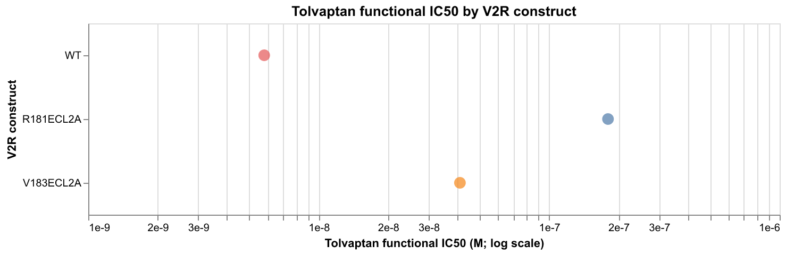
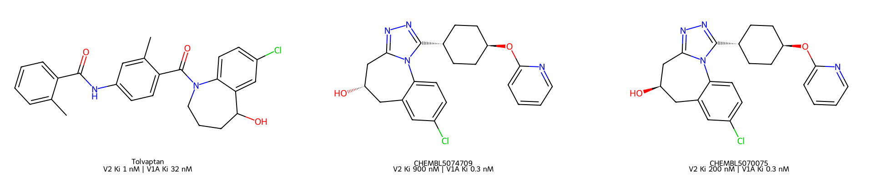
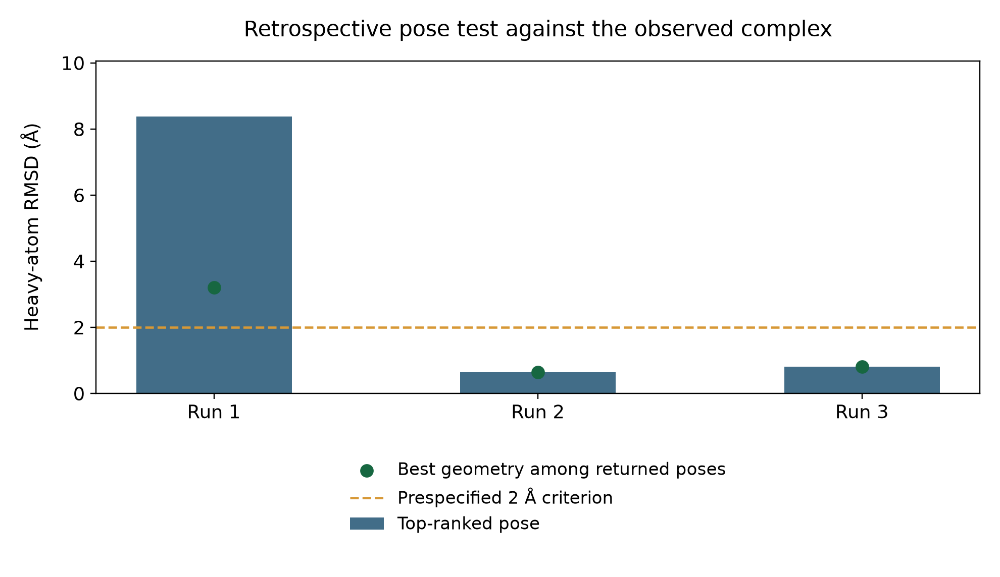
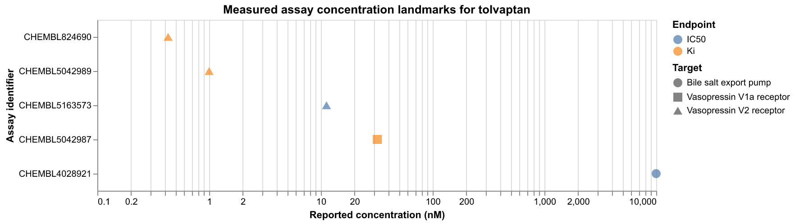
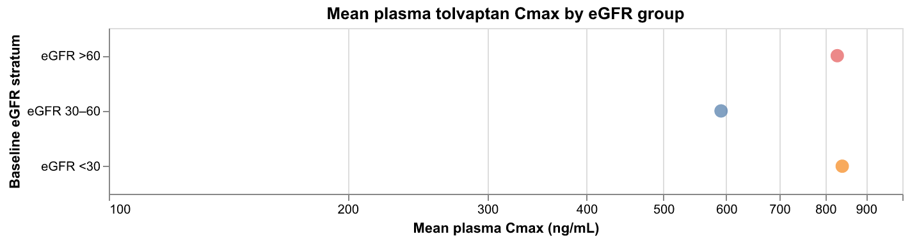
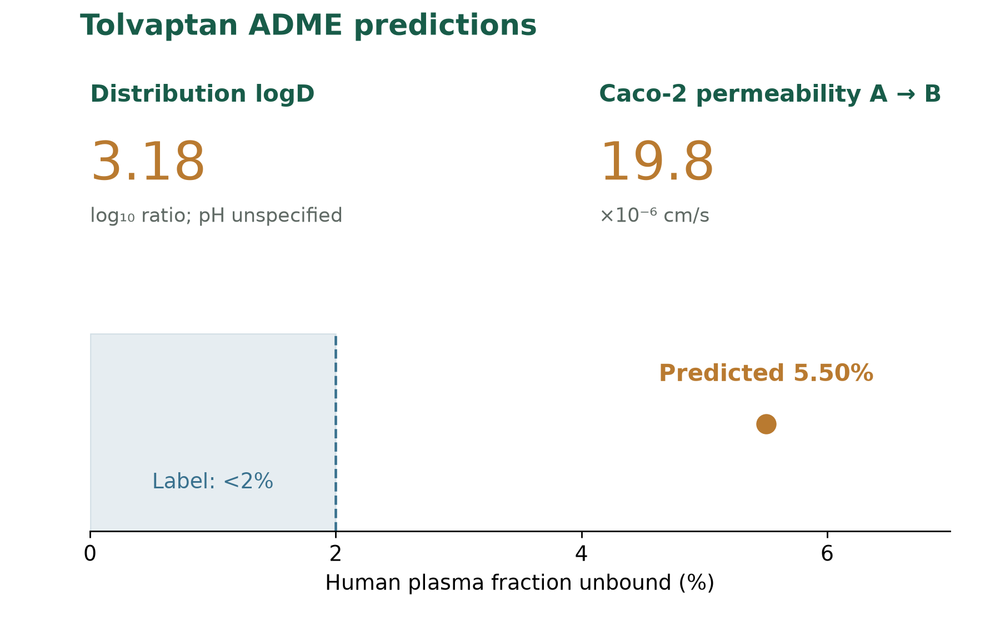
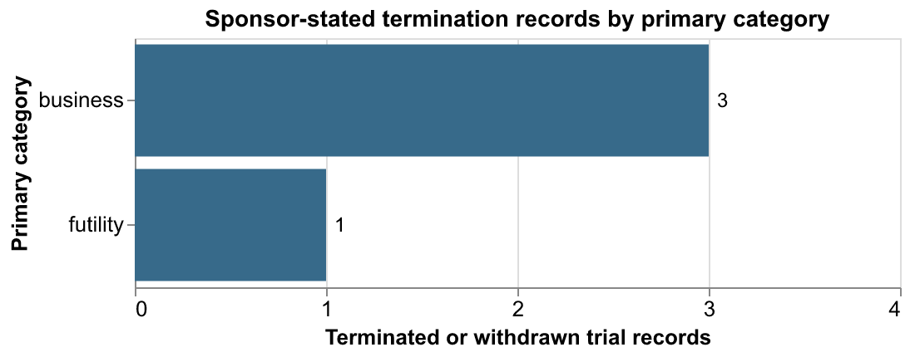

Tolvaptan in ADPKD
Disease biology, drug mechanism, clinical evidence, pharmacology, safety, and the IP landscape.
Analysis of tolvaptan in autosomal dominant polycystic kidney disease
Overview
Disease background. Autosomal dominant polycystic kidney disease (ADPKD) is an inherited disease in which fluid-filled cysts enlarge the kidneys and gradually reduce their ability to filter blood. Long-term observations in CRISP, an ADPKD imaging study, showed kidney enlargement before a measurable fall in filtration (Chapman et al., 2012).
Therapy. Tolvaptan blocks the kidney vasopressin V2 receptor (AVPR2). Vasopressin increases water reabsorption in kidney tubules, so blocking its V2 receptor increases water excretion. It is used to slow kidney-function decline in adults at risk of rapidly progressing ADPKD (FDA, 2026).
Adult benefit. The TEMPO 3:4 trial compared tolvaptan with placebo in earlier-stage ADPKD over three years. Annual kidney-volume growth was 2.8% with tolvaptan versus 5.5% with placebo among 1,307 participants in the primary MRI analysis. TEMPO authors proposed that an acute reduction in cyst-fluid secretion partly explained the larger first-year volume effect. Estimated glomerular filtration rate (eGFR) is a blood-based estimate of kidney filtration. In TEMPO, eGFR declined more slowly with tolvaptan: the annual slope difference versus placebo was +0.98 mL/min/1.73 m2/year (95% CI +0.60 to +1.36).
The REPRISE trial tested tolvaptan in later-stage ADPKD over one year. Participants were randomized after five weeks of tolvaptan titration and tolerability testing. In the annualized comparison, eGFR fell less with tolvaptan than with placebo, a difference of +1.27 mL/min/1.73 m2 (95% CI +0.86 to +1.68). This comparison measured change from pretreatment to off-treatment follow-up.
Biological evidence. In male Pkd1-knockout mice, tolvaptan-SD improved survival and kidney-mass outcomes versus untreated controls (19 versus 22 animals). The tolvaptan-versus-untreated cystic-index comparison was nonsignificant (P=0.19; Song et al., 2023). An analysis of 12 treated and 12 untreated mice found lower Aqp2 RNA with tolvaptan (GSE198340). Aqp2 encodes the aquaporin-2 water channel. Avpr2 RNA showed no statistically supported change in the same comparison. Avpr2 encodes tolvaptan’s V2 receptor target. These exploratory mouse measurements are candidate response markers. The separate pediatric trial enrolled children aged 5–17 years. Tolvaptan changed urine concentration, while its small, exploratory one-year comparisons left clinical benefit uncertain.
Safety. In TEMPO, adverse events led to discontinuation in 148/961 tolvaptan participants versus 24/483 placebo participants. Aquaretic events accounted for 63/961 versus 1/483 discontinuations. Aquaretic effects include increased urination and thirst. Alanine aminotransferase (ALT) is a liver enzyme used to detect liver-cell injury. Across two trials, ALT rose above three times the upper limit of normal in 80/1,637 tolvaptan versus 13/1,166 placebo participants. Serious liver injury meeting a combined transaminase-and-bilirubin criterion occurred in 3/1,487 tolvaptan recipients and none on placebo. The combined criterion required transaminases at least three times the upper limit of normal and bilirubin at least twice the upper limit (FDA, 2026).
Remaining question. Direct drug concentration and receptor engagement inside human cysts have not been established in the reviewed sources. Paired cyst-fluid secretion, kidney-structure and receptor-engagement measurements would clarify how acute fluid changes contribute to the early kidney-volume response.
| Section | Key summary |
|---|---|
| 1. Clinical Phenotype & Endpoints | Among 93 selected adults, height-adjusted kidney volume rose 55% by year 8; measured filtration changed −10.6% by year 6 and −22.3% by year 8. |
| 2. Mechanism & Biomarker Biology | Primary ADPKD cell assays and V2-selective agonist rescue in recessive PCK rats support pathway activity, but the Pkd1 mouse cystic-index comparison was nonsignificant (P=0.19). |
| 3. Clinical Outcomes | TEMPO and REPRISE reported filtration differences in selected adults; pediatric publication and registry eGFR results use distinct exploratory estimands. |
| 4. Pharmacology & Exposure | FDA-reviewed modeling found no graded kidney-volume response across trough concentrations of 82.0–126.3 ng/mL; human cyst-site exposure remains unmeasured. |
| 5. Toxicology & Therapeutic Window | TEMPO adverse-event discontinuation was 148/961 versus 24/483; the 2026 FDA label reports combined liver injury in 3/1,487. |
| 6. IP & Competitive Landscape | Six selected ADPKD programs are identified; broader status is unknown for venglustat and rapamycin/sirolimus. |
| 7. Evidence Gaps & Development Implications | Human cyst-site exposure and receptor engagement remain unmeasured; the PCK rat rescue supports V2 contribution, while cyst-cell necessity and patient mediation remain open. |

1. Clinical Phenotype & Endpoints
Key finding
Among 93 selected adults, height-adjusted kidney volume rose 55% by year 8; measured filtration changed −10.6% by year 6 and −22.3% by year 8.
Kidney Disease: Improving Global Outcomes (KDIGO) 2025 and disease-context sources identify PKD1 and PKD2 as major ADPKD genes (KDIGO guideline; PMID 33852874; PMID 36805211). This guideline/background support does not represent a new human genetic-association or variant-to-cell causal analysis in this report. The initiating cellular sequence is not fully settled. Tubular epithelial cysts expand, distort kidney architecture, and progressively reduce functioning tissue, producing kidney enlargement, hypertension, pain, and eventually filtration loss. Height-adjusted total kidney volume (htTKV) is a prognostic structural measure. KDIGO 2025 describes Mayo imaging classification for typical morphology using age and htTKV; class 1C overlaps with slow progressors. Its historical eGFR-decline criterion ≥3 mL/min/1.73 m2/year differs from REPRISE's older-cohort >2.0 criterion. Imaging and historical filtration are prognostic or selection measures; urine measures reflect V2 pharmacodynamic response. The guideline does not validate an individual efficacy surrogate.
The Consortium for Radiologic Imaging Studies of Polycystic Kidney Disease (CRISP) was a long-term observational imaging study of ADPKD progression. Among 93 adults with complete repeated measurements and initially preserved filtration, mean height-adjusted kidney volume was 55% higher by year 8; measured filtration was 10.6% lower at year 6 and 22.3% lower at year 8 (PMID 22344503).
Supporting evidence
1.1 Natural history and measurement
1.1.1 Cyst enlargement can precede measurable filtration decline
Height-adjusted total kidney volume (htTKV) is kidney volume divided by the patient's height. CRISP measured filtration using iothalamate clearance, a tracer-based test. In the 93 adults with complete repeated measurements, kidney enlargement preceded the first statistically significant group-level fall in filtration at year 6. These participants were followed to describe disease progression (PMID 22344503).

Figure 1.1. Mean percentage changes in height-adjusted kidney volume and measured filtration from baseline in 93 CRISP participants. Points show the reported follow-up years. The source provides no uncertainty estimates for these values (Chapman et al., 2012).
Code disease_frame_endpoint_trajectory.qmd
1.1.2 Kidney volume measures structure; filtration measures function
In TEMPO 3:4, annualized MRI TKV growth among adults aged 18–50 with baseline TKV ≥750 mL and estimated creatinine clearance ≥60 mL/min was 2.8%/year with tolvaptan and 5.5%/year with placebo; the adjusted between-arm difference was −2.7 percentage points/year (95% CI −3.3 to −2.1; P<0.001; PMID 23121377; NCT00428948). TEMPO authors reported favorable TKV benefit across prespecified strata and nominal renal-function subgroup differences for age, hypertension, and larger TKV. Figure 2D plots reciprocal serum creatinine. These exploratory subgroup findings do not validate individual response prediction (PMID 23121377). This structural endpoint does not directly measure filtration, symptoms, or kidney failure. The primary MRI analysis included 1,307 of 1,445 randomized participants; registry outcome groups list 819 and 458, a 30-participant difference that retained records do not reconcile. TEMPO authors said the larger first-year TKV effect was probably partly due to acute reduction in cyst-fluid secretion, citing short-term reports of 3–4% TKV reduction at 1–3 weeks (PMID 23121377). The cited predecessor is PMID 21544064, DOI 10.1038/ki.2011.119; its design, population, and renal outcomes remain unresolved because its original was not retained or assessed. This acute-volume interpretation does not negate the separately measured filtration effect.

Figure 1.2. Annual total kidney volume (TKV) growth (%/year; point estimates and source-reported 95% confidence intervals) by randomized arm in TEMPO 3:4: adults aged 18–50 with baseline TKV ≥750 ml and estimated creatinine clearance ≥60 ml/min; three-year primary TKV endpoint, primary efficacy analysis N=1,307 of 1,445 randomized. Values from the TEMPO 3:4 publication (PMID 23121377), NCT00428948.
Code orientation_efficacy_landscape.qmd
1.1.3 Prognostic measures and treatment-response markers
KDIGO 2025 uses age and htTKV in Mayo classification for typical kidney morphology; class 1C overlaps with slow progressors. Its historical eGFR-decline criterion of at least 3 mL/min/1.73 m2/year differs from REPRISE's >2.0 criterion for participants aged 56–65. These measures support selection or prognosis, not validated individual response prediction. Urine osmolality reflects V2 pharmacodynamic response; exploratory TEMPO subgroup differences likewise do not establish who benefits individually.
1.1.4 Disease stage is not reducible to kidney volume
CRISP defined functional chronic kidney disease (CKD) stage 3 as GFR <60 mL/min/1.73 m2 and stage 4 as <30; these are filtration thresholds, not cyst-morphology stages. Higher baseline htTKV predicted later stage-3-or-worse CKD in this selected cohort (adjusted odds ratio 1.48 per 100 cc/m, 95% CI 1.29–1.70; PMID 22344503). An odds ratio compares event odds between groups; 1.48 means higher odds in this prognostic model, not a 48-percentage-point increase in risk. This association does not show that TKV itself causes filtration loss or that treatment-induced TKV change predicts treatment benefit. A validated ADPKD imaging-stage account is not established by retained primary sources.
2. Mechanism & Biomarker Biology
Key finding
Primary ADPKD cell assays and V2-selective agonist rescue in recessive PCK rats support pathway activity, but the Pkd1 mouse cystic-index comparison was nonsignificant (P=0.19).
Primary cell assays in autosomal dominant polycystic kidney disease (ADPKD) tissue support pathway activity: tolvaptan inhibited arginine vasopressin (AVP)-stimulated cyclic adenosine monophosphate (cAMP) with apparent half-maximal inhibitory concentration (IC50) about 0.2 nM in three preparations. In these assays, IC50 is the concentration producing half the maximal inhibition of the measured response. The causal chain from vasopressin V2 receptor (AVPR2) blockade to clinical benefit remains incomplete. A separate engineered-cell study found mutant V2 receptors required higher tolvaptan concentrations to inhibit AVP-stimulated cAMP. Neither establishes receptor-specific mediation of cyst-area change or receptor occupancy in patient kidneys (PMID 21816754; PMID 38902502).
Supporting evidence
2.1 Disease biology and intervention
2.1.1 Receptor blockade changes water-handling signaling, not the inherited disease genes
In collecting-duct cells, arginine vasopressin (AVP) activates the vasopressin V2 receptor (AVPR2), raises cyclic adenosine monophosphate (cAMP), and supports aquaporin-2 insertion for water reabsorption. In ADPKD cyst cells, AVP-responsive cAMP is linked experimentally to chloride secretion and proliferation, processes proposed to support cyst expansion. Tolvaptan antagonizes AVPR2; in primary ADPKD cultures it reduced AVP-stimulated cAMP, proliferation, chloride-current and cyst-area responses. These complementary cell assays do not establish a complete human causal-mediation chain or cyst-site engagement (PMID 21816754; JYNARQUE prescribing information).
2.1.2 ADPKD causal genes differ from the pharmacologic target
PKD1 and PKD2 encode polycystin-1 and polycystin-2 and are the principal inherited ADPKD genes in the retained disease account. A retained review proposes cilia-based tubular-cell signaling for these proteins, but the initiating human disease chain remains unsettled (PMID 36805211). Cysts arise from renal tubules and enlarge both kidneys. AVPR2 is tolvaptan's pharmacologic target, not an asserted ADPKD causal gene (PMID 22344503; PMID 33852874). Assessed target-validation sources established neither an AVPR2 common-variant credible set nor a rare-variant burden for ADPKD. The exact genome-wide association study (GWAS) Catalog ADPKD-trait query returned zero without a same-field positive control, so that empty query is not a biological negative.
2.1.3 AVP stimulates several distinct responses in primary ADPKD cultures
In primary autosomal dominant polycystic kidney disease (ADPKD) epithelial cultures, arginine vasopressin (AVP) raised cyclic adenosine monophosphate (cAMP) from 0.7±0.2 to 4.3±0.6 pmol/monolayer after 15 minutes at 10-9 M, across seven experiments (PMID 21816754). This assay measures intracellular signaling, not cyst growth. In separate 72-hour cultures, AVP increased the MTT proliferation proxy; tolvaptan reduced the AVP-associated increment by 30% at 10-10 M and 43% at 10-9 M, and blocked it at 10-8 M (11 kidney preparations; PMID 21816754). MTT reflects cellular metabolic activity, so the result is not a direct cell count. In a separate no-AVP dose panel (n=13), the lowest tolvaptan concentrations significantly increased basal MTT signal; the authors suggested possible partial agonism, or weak receptor activation (PMID 21816754). At 10-7 M, basal MTT signal fell below baseline (PMID 21816754). Two normal-tubule preparations showed an AVP-associated MTT decrease that moved toward baseline with tolvaptan; these small controls and basal suppression leave off-target effects plausible (PMID 21816754).
In polarized ADPKD cell monolayers, basolateral AVP raised short-circuit current, a transport proxy; benzamil and inhibition of the cystic fibrosis transmembrane conductance regulator (CFTR) chloride channel support a CFTR-sensitive chloride component, and basolateral tolvaptan inhibited the AVP-associated current (PMID 21816754). The current is not direct fluid volume. In collagen-gel cultures, forskolin and epidermal growth factor (EGF) initiated cysts for three days, then three kidney preparations received control, AVP, or AVP plus tolvaptan (both 10-8 M) for 5–7 days. AVP increased summed two-dimensional area of cysts ≥100 μm; tolvaptan reduced area versus AVP alone (P<0.05), but area remained above control (PMID 21816754). This is an in-vitro structural proxy, not organ volume. The retained Figure 7 supports the reported three-preparation cyst-area comparison; its plotted summaries do not provide further distributional detail. Together, the assays support antagonist-sensitive AVP responses in primary ADPKD cultures, but do not establish sequential cAMP-to-extracellular signal-regulated kinase (ERK) mediation or the clinical contribution of secretion versus proliferation. The study discloses Otsuka support and an Otsuka-employed coauthor; these primary-cell results come from one sponsor-connected study group (PMID 21816754).
2.1.4 Receptor-mutant assays support residue-sensitive function, not tissue engagement
In transiently transfected HEK293T cells, wild-type vasopressin V2 receptor (V2R) functional IC50 was (5.8±2.1)×10-9 M for inhibition of AVP-stimulated cAMP; R181ECL2A and V183ECL2A values were (1.8±1.2)×10-7 M and (4.1±0.3)×10-8 M. The source reports three parallel experiments but does not define the ± statistic or their independence (PMID 38902502). Surface-expression controls support interpretation of functional receptor perturbation, but these values are not binding affinity or patient occupancy.

Figure 2.1. Reported tolvaptan functional IC50 (M) for inhibiting AVP-stimulated cAMP in transfected HEK293T cells expressing wild-type or mutant V2R; points are means from three parallel experiments, and uncertainty type is unspecified (PMID 38902502).
Code target_validation_expression.qmd
2.1.5 Structure–activity and receptor binding
Matched binding records distinguish a V2 benchmark from a V1A-oriented series
The curated ChEMBL bioactivity database records from Szeleczky et al. (2021) report Ki values. Ki summarizes binding strength in this assay; lower values indicate tighter binding. In human 1321N1 membranes, the tolvaptan benchmark had V2 Ki 1 nM and vasopressin V1A-receptor Ki 32 nM; it is separate from the six-compound V1A-antagonist series (CHEMBL5042989; CHEMBL5042987; PMID 34255509).

Figure 2.2. Matched membrane-binding Ki values (nM): left, tolvaptan benchmark; middle, CHEMBL5074709; right, CHEMBL5070075. No uncertainty was reported (Szeleczky et al., 2021; PMID 34255509; CHEMBL5042479).
Two encoded stereoisomers in that separate antagonist series differ at one stereocenter. In the same assay, CHEMBL5074709 and CHEMBL5070075 had V2/V1A Ki values of 900/0.3 and 200/0.3 nM, respectively; their V2 values give a descriptive 4.5-fold ratio. ChEMBL marks potential duplicates for some matched records, and curated values have no uncertainty estimates. The numeric comparison is the curator extraction, not a new assay or a complete tolvaptan optimization series. Full article assay tables were not read, and these records do not support a fitted quantitative SAR model.
The deposited pocket and receptor mutations provide distinct evidence types
Zhang et al. (2025) deposited the tolvaptan-bound vasopressin V2 receptor (V2R) structure 9U81 at 3.08 Å resolution, with 16 residues within a geometric 4 Å rule; separately, Liu et al. (2024) reported functional cAMP IC50 values of 5.8 nM for wild-type receptor and 680 nM for F178A in HEK293T cells (Protein Data Bank [PDB] 9U81; PMID 41188237; PMID 38902502). Liu et al. tested 16 receptor mutations using inhibition of AVP-stimulated cAMP. F178 is phenylalanine at receptor residue 178; three parallel experiments were reported, but the ± dispersion label is unspecified. Proximity does not assign energetic contributions, and functional cAMP inhibition is not binding Ki or patient occupancy. Mutants showed both weak and large functional shifts.

Figure 2.3. Observed tolvaptan pocket in PDB 9U81 and deposited pose overlaid with run 2; nearby markers include a subset of the 16 residues within the geometric 4 Å rule, ligand carbon, nitrogen, oxygen and chlorine are green, blue, red and purple, and deposited and docked poses are green and orange (unaligned RMSD 0.64 Å; no uncertainty; Zhang et al., 2025; PMID 41188237).
Fouillen et al. (2025) reported the separate deposited structure 9HAP at 2.5 Å, but its ligand chemistry is R-tolvaptan rather than the S-tolvaptan deposited in 9U81. No docking was performed on 9HAP because pocket-adjacent side chains were incomplete, and Zhang et al. state that 9U81 refinement used 9HAP. The structures therefore are not an independent validation pair and do not establish which isolated isomer underlies clinical response (PDB 9HAP; PMID 40274867).
Three docking searches failed the prespecified all-run recovery criterion
Unaligned heavy-atom root-mean-square deviation (RMSD) measures the distances between corresponding ligand atoms in their unchanged receptor coordinate frame, without superimposing the docked ligand. In three AutoDock Vina 1.2.7 searches, top-ranked pose RMSDs were 8.38, 0.64, and 0.80 Å, with corresponding scores of −6.783, −7.878, and −7.525 kcal/mol. The prespecified all-three ≤2 Å requirement failed; even the best returned mode in run 1 was 3.20 Å away. The full 27-mode output and 16-mutation context remain available in supporting result tables.

Figure 2.4. Unaligned heavy-atom RMSD (Å) for the top-ranked and best of nine returned poses in each of three Vina searches; bars mark top-ranked pose, dots best returned geometry, and dashed line the 2 Å threshold, with no uncertainty interval (Vina 1.2.7; PDB 9U81).
The scores do not measure affinity or efficacy. Starting conformer and random seed varied together, so their separate contributions cannot be identified. Open Babel reported an aromatic bond-assignment warning. Its hydrogen-addition option overrode requested pH; receptor charge columns were zero, and protonation plus donor/acceptor typing were unvalidated. Retained coordinate agreement does not validate receptor chemistry. This run tests retrospective pose recovery only. It includes no molecular dynamics, protonation calculation, clinical fit, independent validation, or patient-occupancy inference. Exact commands and logs are retained with the methods.
2.1.6 Animal and organoid observations do not collapse into one verdict
In male kidney-specific, tamoxifen-induced conditional Pkd1-knockout mice, tolvaptan-SD improved kidney survival and lowered kidney-weight/body-weight ratio versus untreated mutant controls (n=19 vs 22; PMID 36743216). The study's Figure 1E also marks lower final blood urea with tolvaptan than untreated mice (P<0.05). Pkd1 loss was induced at postnatal days 18–19, and randomized groups began treatment at day 40 with food containing 0.15% tolvaptan-SD (66.7% active drug). Blood urea monitoring began at day 75; mice above 20 mmol/L were euthanized for kidney failure, and all groups were collected when about 75% of untreated animals reached that endpoint, around days 111–120. This variable endpoint timing and male-only model limit transfer; Otsuka supplied the tolvaptan-SD. Figure 1D places P=0.19 over the KO_TOL-versus-KO cystic-index comparison (untreated KO n=22; KO_TOL n=19), and its key defines significance comparisons versus KO. This is a nonsignificant tolvaptan-versus-untreated structural contrast. The article's broad Results prose says monotherapy reduced cystic index, so the paper contains an internal discordance.
2.1.7 Deposited mouse arrays show a water-channel transcript response, not receptor activation
In Song et al.'s 2023 mouse study, deposited Gene Expression Omnibus (GEO) accession GSE198340 is an RMA-normalized microarray matrix produced with Transcriptome Analysis Console 4 (TAC4). This case fitted that processed matrix and did not reprocess raw CEL files or raw sequencing data. The deposited 57 samples were one whole-kidney sample per male mouse. Of these, 47 Pkd1-knockout samples were fitted: untreated (12), tolvaptan (12), salsalate (11), and combination (12); 10 wild-type samples were excluded. The primary contrast was 12 tolvaptan versus 12 untreated samples. The expression kidneys had been selected around each treatment group's median two-kidney-weight/body-weight (2KW/BW) ratio. A four-arm linear model fitted 47 mutant arrays and used empirical-Bayes moderation to estimate residual variance; its tolvaptan-minus-untreated contrast used 12 kidneys per arm. The model tested 34,472 probes. Of these, 7,988 probes had Benjamini–Hochberg-adjusted p<0.05; the Benjamini–Hochberg procedure controls the expected proportion of false discoveries among declared significant probes under its assumptions; it does not assign an individual marker a false-probability or control familywise error, and these are probes rather than unique genes. Eight marker probes were selected after fitting for exploratory display.
Aqp2 encodes aquaporin-2, a water channel, while Avpr2 encodes the receptor itself. In the primary contrast, the estimated Aqp2 probe 17314833 difference was −0.401667 log2 units (95% CI −0.571912 to −0.231422; adjusted p=0.00021766). The Aqp2 probe 17314833 treatment contrast was −0.401667 log2 units (95% CI −0.571912 to −0.231422; adjusted p=0.00021766). Avpr2 probe 17535712 was +0.115 log2 units (95% CI −0.016299 to +0.246299; adjusted p=0.227621). These are computed probe-level bulk RNA differences, not protein abundance, receptor occupancy, signaling, or clinical benefit. Bulk RNA abundance does not establish receptor activity. Arrays were selected near each group's median kidney-size measure, and disease/end-stage or common-endpoint timing varied; no per-sample exposure or harvest-age linkage was available. This same-study reanalysis is not independent replication or a human disease-by-treatment interaction (GSE198340; PMID 36743216).

Figure 2.5. Post-fit marker-probe log2 expression differences in whole-kidney arrays from 12 tolvaptan-treated and 12 untreated male Pkd1-knockout mice; dots are estimates and bars are 95% confidence intervals (GSE198340; PMID 36743216).
Code dependency.qmd
The other plotted markers are Aqp4 (a water-channel gene), Pkd1 (the mouse polycystin-1 gene), Creb1 (a transcription-factor gene), Kcnj1 (a potassium-channel gene), and Prkaca (a protein-kinase-A subunit). These marker probes were exploratory, not specified before fitting.
In polycystic kidney (PCK) rats with Pkhd1-associated recessive disease, AVP deficiency reduced cyst and fibrosis measures; continuous desmopressin (dDAVP; 1-deamino-8-D-arginine vasopressin) add-back (10 ng/h per 100 g from weeks 12–20), a V2-selective agonist, reversed polyuria, raised renal cAMP, and restored cystic/fibrotic phenotype measures in AVP-deficient PCK rats (PMID 18032793). dDAVP also aggravated disease in AVP-sufficient PCK rats, while wild-type rats showed slight renal-mass increase without cysts or fibrosis. This ligand-loss/selective-agonist rescue is receptor-directed pharmacologic causal evidence for a V2 contribution in this PCK/Pkhd1 recessive model, not absence of structural evidence. Systemic water-balance changes remain inseparable; it does not establish cyst-cell-specific genetic necessity, tolvaptan mediation in human ADPKD, or transfer to dominant PKD1/PKD2 disease. An abstract reports no tolvaptan cyst response in PKD2-deficient human ureteric-bud organoids and suggests low AVPR2 expression (PMID 42772449). This model-specific contrary observation is not decisive: dose, achieved exposure, controls, and independent-line denominator are unavailable in the retained abstract. These are different interventions, species/model systems, and source depths; neither erases the other's observation.
2.1.8 Human disease-state receptor abundance remains unmeasured here
Normal-tissue Genotype-Tissue Expression (GTEx) RNA is not a measure of diseased cyst tissue or receptor protein. GEO accession GSE185948 is an adult ADPKD single-nucleus series with annotated ADPKD and control donors; its matrices were not retrieved or fitted in the owning analysis, so no disease-versus-control expression direction follows. A descriptive calculation from GTEx v10 gave AVPR2 kidney-medulla median expression of 16.5661 transcripts per million (TPM), rank 1 among 52 tissue medians; these normal-reference aggregates are not individual donors or diseased cyst measurements. A separate count of GSE185948 annotation metadata found 102,710 rows labeled across eight PKD and five control donor labels; annotation counts are not gene-expression estimates and do not establish independent study design. Donor-aware receptor RNA, protein, and localization together with exposure and engagement would clarify transfer to patient cyst epithelium.
3. Clinical Outcomes
Key finding
TEMPO and REPRISE reported filtration differences in selected adults; pediatric publication and registry eGFR results use distinct exploratory estimands.
Randomized adult trials report slower estimated glomerular filtration rate (eGFR, a blood-creatinine-based estimate of filtration) decline with tolvaptan. TEMPO also reported slower magnetic resonance imaging (MRI) total kidney volume (TKV, kidney size) growth in selected adults. REPRISE provides a one-year result in later-stage adults who tolerated a prerandomization tolvaptan run-in. The estimates do not establish identical effects across ages, stages, or people unable to tolerate treatment (PMID 23121377; PMID 29105594).
Supporting evidence
3.1 Randomized adult outcomes
| Trial and comparison | eGFR outcome and window | Between-arm difference | Analysis/population bound |
|---|---|---|---|
| TEMPO 3:4 tolvaptan vs placebo | Annual slopes from end of dose escalation to month 36: −2.72 vs −3.70 mL/min/1.73 m2/year | +0.98 (95% CI +0.60 to +1.36) | 1,445 randomized; label reports 5% tolvaptan and 2% placebo exclusions from slope analysis; exact contributor n not established |
| REPRISE tolvaptan vs placebo | Annualized 12-month change: −2.34 vs −3.61 mL/min/1.73 m2 | +1.27 (95% CI +0.86 to +1.68) | Publication: 1,370 randomized; registry efficacy groups 668/663; randomization followed tolerability run-in |
These are distinct randomized comparisons with different windows and selection, not head-to-head estimates (PMID 23121377; PMID 29105594; NCT00428948; NCT02160145).
3.1.1 TEMPO reported structural and filtration differences
TEMPO 3:4 randomized adults aged 18–50 years with TKV ≥750 mL and estimated creatinine clearance ≥60 mL/min. Its primary endpoint was annual TKV growth. In TEMPO, the supporting estimated-filtration analysis of the kidney-function secondary endpoint reported annual eGFR slopes from the end of dose escalation through month 36 of −2.72 versus −3.70 mL/min/1.73 m2/year for tolvaptan and placebo; the reported between-arm difference was +0.98 (95% CI +0.60 to +1.36; P<0.001; PMID 23121377; NCT00428948). The publication states that all 1,445 randomized participants were included in the key secondary efficacy analysis, but does not specify that as the eGFR-slope denominator. The label specifically says that 5% of tolvaptan and 2% of placebo participants were excluded from the slope analysis for missing baseline data or discontinuation before end of titration, then describes estimates among contributors; exact contributor counts are not established, and rounded percentages do not support exact-count reconstruction (JYNARQUE prescribing information). The label's reported difference of 1.0 (95% CI 0.6 to 1.4) is rounded reporting of this comparison, not a separately fitted estimate. The trial also reported a multiple-event clinical-progression hazard ratio of 0.87 (95% CI 0.78–0.97; P=0.01), driven by kidney-function worsening and pain; no detected effect was reported for hypertension or albuminuria. A hazard ratio compares event rates over time; 0.87 indicates a lower rate in the tolvaptan arm in this analysis. This is a composite event rate, not the proportion of participants with an event.
3.1.2 REPRISE supports later-stage eGFR comparison after tolerability selection
REPRISE enrolled adults aged 18–55 years with eGFR 25–65, or ages 56–65 with eGFR 25–44 mL/min/1.73 m2 and historical decline >2.0 mL/min/1.73 m2/year. Participants were randomized after a two-week titration and three-week tolerability period, a five-week total tolvaptan run-in. Its primary endpoint compared pretreatment baseline with off-treatment follow-up after planned 12-month treatment and three-week follow-up, annualized by participant duration; it is not an on-treatment slope. The publication abstract reports 1,370 randomized. The registry lists 1,331 in its primary eGFR groups (668/663), and the September 2026 FDA label reports 1,313 in its primary analysis; these source counts are distinct, not reconciled or interchangeable. The publication reports annualized eGFR changes of −2.34 versus −3.61 mL/min/1.73 m2, with between-arm difference +1.27 (95% CI +0.86 to +1.68; P<0.001; PMID 29105594; NCT02160145). The retained publication is abstract-depth, and run-in selection limits generalization to patients unable to tolerate treatment.
3.2 Pediatric response and limits
3.2.1 Pharmacodynamic urine response did not establish pediatric efficacy
The one-year randomized descriptive study allowed enrollment at ages 4–17 years with eGFR ≥60 mL/min/1.73 m2. The 91 enrolled participants were aged 5–17 years (Table 1, PMID 36719158). It randomized 91 participants: 48 to tolvaptan and 43 to placebo across both age groups. Urine osmolality and specific gravity were coprimary pharmacodynamic endpoints, and adolescent htTKV was the key secondary endpoint. Statistical comparisons were exploratory and post hoc, and no formal sample-size power calculation was performed. In all ages, week-one urine osmolality fell by least-squares mean 390 mOsm/kg (SEM 28; n=48) with tolvaptan versus 90 mOsm/kg (SEM 29; n=42) with placebo (between-arm difference −301; 95% CI −381 to −220; nominal P<0.001). Specific gravity fell by 0.009 (SEM 0.001; n=48) versus 0.002 (SEM 0.001; n=41), respectively (between-arm difference −0.007; 95% CI −0.009 to −0.005; nominal P<0.001). These coprimary pharmacodynamic comparisons were exploratory, not confirmatory. The nominal P values do not establish pediatric clinical efficacy. Among adolescents, 12-month MRI height-adjusted total kidney volume (htTKV, kidney size adjusted for height) increased 2.6% with tolvaptan (standard error of the mean [SEM] 1.4; n=30 postbaseline) versus 5.8% with placebo (SEM 1.5; n=27; P=0.14). The pediatric report’s exploratory week-1-to-month-12 eGFR least-squares means (model-adjusted averages) were +1.9 with tolvaptan versus −1.8 with placebo (P=0.11; estimator n unstated; PMID 36719158). The publication's all-participant standard errors were 1.5 versus 1.6 mL/min/1.73 m2; arm-specific estimator n was not stated. Separately, NCT02964273 reports Phase A arithmetic mean changes from week-1 baseline to month 12 of +2.6 (SD 10.7; n=40; group OG000) versus −3.2 (SD 10.9; n=39; group OG001); week-1 baseline group counts were 44 and 42. These registry means and publication LS means are separate summaries, not interchangeable or pooled. The paper also reports exploratory eGFR subgroup differences at months 1 and 6 among adolescents and at month 12 among children aged 4–11; those analyses do not establish efficacy (PMID 36719158; NCT02964273). In the pediatric randomized arms, aquaretic events occurred in 31/48 tolvaptan participants versus 7/43 placebo participants. A broad, overlapping standardized Medical Dictionary for Regulatory Activities (MedDRA) dehydration query occurred in 17/48 versus 6/43; these are not diagnosed dehydration cases (PMID 36719158). No liver injury occurred in that small one-year cohort; this does not rule out adult hepatic risk.
3.3 Biomarkers and generalization
3.3.1 No inspected pivotal outcome establishes differential benefit by marker
Baseline TKV and eGFR describe structure and function; pediatric urine osmolality and specific gravity changed with treatment and indicate pharmacodynamic response. The retained TEMPO, REPRISE, and pediatric accounts do not establish a treatment-by-marker interaction. This is bounded to those named sources, not a universal claim about all public literature; assay availability or predictive prevalence is not established by trial measurement alone.
4. Pharmacology & Exposure
Key finding
FDA-reviewed modeling found no graded kidney-volume response across trough concentrations of 82.0–126.3 ng/mL; human cyst-site exposure remains unmeasured.
Oral tolvaptan yields systemic exposure and renal pharmacodynamic effects, but the clinical exposure-response evidence does not show a graded total kidney volume (TKV) response across the studied trough plasma concentration (Cmin) range, and the inspected retained JYNARQUE label and selected FDA clinical-pharmacology review passages do not directly measure human cyst-site exposure. The regulator-reviewed sponsor model pooled 1,067 participants and 6,437 observations from 10 autosomal dominant polycystic kidney disease (ADPKD) trials; it used a one-compartment model with first-order absorption and elimination. FDA reviewers considered it a reasonable description of observations, while noting shrinkage in the estimated absorption-rate constant (Ka) and limited cytochrome P450 3A (CYP3A)-inhibitor data. The exposure analysis found no identified TKV dose-response across steady-state Cmin 82.0–126.3 ng/mL; this does not negate randomized treatment-placebo benefit (New Drug Application [NDA] 204441).
Supporting evidence
4.1 Oral regimen and systemic pharmacokinetics
4.1.1 Label parameters describe distinct dose contexts
The label describes oral split dosing, starting at 45 mg on waking plus 15 mg eight hours later and titrating as tolerated to 90/30 mg. Values below come from distinct label or trial contexts and should not be read as one concentration profile.
| Measure | Source-reported value | Scope |
|---|---|---|
| Absolute oral bioavailability after 30 mg | 56% (range 42%–80%) | Label pharmacokinetic account |
| Plasma protein binding | >98% | Label; total plasma is not unbound tissue exposure |
| Time to peak concentration (Tmax) | 2–4 h | Healthy subjects |
| Apparent half-life | ~3 h at 15 mg; ~12 h at 120 mg | Higher-dose prolongation attributed to absorption |
| Volume of distribution (Vd) | ~3 L/kg | Label parameter |
| Apparent clearance | ~4 mL/min/kg | Label parameter |
The label-reported half-life and clearance are parameters, not individual measured profiles. At one week of 90/30-mg dosing, three small ADPKD strata grouped by estimated glomerular filtration rate (eGFR) had nonmonotonic mean peak plasma concentration (Cmax) values of 828, 591 and 840 ng/mL (n=8, 9 and 9); the source’s parentheticals are labeled %CV but their dispersion meaning remains unresolved (NDA 204441; study CSR 156-09-284).
4.2 Renal pharmacodynamic response
4.2.1 Split-dose tolvaptan changes human urine output
Among adults with ADPKD and eGFR >60 mL/min/1.73 m2, the label reports mean daily urine output increased by about 4 L to about 7 L total with 90/30-mg split dosing (participant denominator not stated). Among adults with eGFR <30 mL/min/1.73 m2, mean daily output increased about 2 L to about 5 L total with the same regimen (denominator not stated; JYNARQUE prescribing information). Urine output and decreased urine osmolality (urine concentration) are renal pharmacodynamic readouts of V2 blockade, not cyst-cell exposure or occupancy.
4.3 Assays and human regimen
4.3.1 Assay values are not interchangeable exposure estimates
For receptor binding, a lower inhibition constant (Ki) means less compound was needed to displace ligand; a lower half-maximal inhibitory concentration (IC50) means less compound was needed to halve the measured functional response. The matched human 1321N1 membrane vasopressin V2 receptor (V2) and vasopressin V1A receptor (V1A) binding pair gave Ki values of 1 and 32 nM, respectively, a descriptive 32-fold assay ratio. A separate V2 functional cyclic adenosine monophosphate (cAMP) assay reported half-maximal inhibitory concentration (IC50) 11.22 nM in Chinese hamster ovary (CHO) cells; it is a different endpoint and is not combined with binding values. AUC0–5 means area under the plasma concentration-time curve from hour zero through hour five.
Separate ChEMBL (a curated bioactivity database) records report V2 binding and cell-function values across different cells and endpoints, and one in-vitro bile-salt-export-pump (BSEP) value; these do not form a common potency curve or clinical margin (CHEMBL824690; CHEMBL5042989; CHEMBL5042987; CHEMBL5163573; CHEMBL4028921). The available selected assay panel and its retrieval are incomplete.
| Assay or PK comparison | Tolvaptan value | Meaning and scope |
|---|---|---|
| Human 1321N1 membrane V2 binding Ki | 1 nM | Lower Ki means less compound was needed to displace ligand |
| Human 1321N1 membrane V1A binding Ki | 32 nM | Same assay class; descriptive V1A:V2 ratio 32 |
| CHO-cell V2 cAMP IC50 | 11.22 nM | Functional assay, distinct from binding |
| eGFR >60 (n=8), one week 90/30 mg | Cmax 828 ng/mL; AUC0–5 2,850 ng·h/mL | Source-reported means |
| eGFR 30–60 (n=9), same regimen | Cmax 591 ng/mL; AUC0–5 2,140 ng·h/mL | Source-reported means |
| eGFR <30 (n=9), same regimen | Cmax 840 ng/mL; AUC0–5 3,100 ng·h/mL | Source-reported means |
After one week of oral 90/30-mg dosing, FDA-reviewed ADPKD participants with eGFR >60 (n=8), 30–60 (n=9), and <30 (n=9) had source-stated mean plasma Cmax values of 828, 591, and 840 ng/mL, and mean AUC0–5 values of 2,850, 2,140, and 3,100 ng·h/mL, respectively. The source labels parenthetical values as coefficient of variation (%CV), but their dispersion meaning is unresolved; no interval is inferred (FDA clinical-pharmacology review for New Drug Application [NDA] 204441; study clinical study report [CSR] 156-09-284).
4.3.2 CYP3A interactions and food change systemic exposure differently
Maximum plasma concentration (Cmax) and area under the concentration-time curve (AUC) describe peak and integrated systemic exposure.
| Label comparison | Concomitant treatment and timing | Effect on tolvaptan systemic exposure |
|---|---|---|
| Ketoconazole | 200 mg one day before and with 30 mg tolvaptan | Cmax 3.5-fold; AUC 5.4-fold |
| Fluconazole | 400 mg one day before; 200 mg concomitantly | Cmax +80%; AUC +200% |
| Rifampin | 600 mg daily for 7 days, then 240 mg tolvaptan | Cmax and AUC about 85% lower |
| High-fat meal | With 90 mg tolvaptan | Cmax doubled; AUC unchanged |
In label interaction studies, ketoconazole raised Cmax/AUC 3.5/5.4-fold, fluconazole raised them 80%/200%, and rifampin reduced both about 85%; a high-fat meal doubled peak concentration without changing AUC. These are separate source-specific comparisons, not a common exposure study (JYNARQUE prescribing information).

Figure 4.1. Five selected tolvaptan assay-level concentration records (nM) across receptor binding, cell signaling, and transporter systems; symbols distinguish endpoint and target, replicate denominators are not consistently stated, no dispersion is shown, and assays are not directly comparable (CHEMBL824690, CHEMBL5042989, CHEMBL5042987, CHEMBL5163573, CHEMBL4028921).
Code admet_pkpd_exposure.qmd

Figure 4.2. Mean plasma tolvaptan Cmax (ng/mL) after one week of 90/30-mg dosing by baseline eGFR (>60, n=8; 30–60, n=9; <30, n=9); source dispersion labels are unresolved, so no intervals are shown (FDA NDA204441; CSR 156-09-284).
Code admet_pkpd_exposure.qmd
4.3.3 Human cyst-site concentration and occupancy are not established
The specifically inspected JYNARQUE label pharmacology/clinical passages and selected FDA clinical-pharmacology review passages (NDA 204441; CSR 156-09-284) do not directly measure human ADPKD kidney, cyst-fluid, cyst-epithelial concentration, or receptor occupancy. Retained ChEMBL response records cover 100 of 287 records; 187 were not inspected. GSE185948 expression matrices were not retrieved or fitted. Donor- and cell-type-specific receptor abundance and localization remain unestablished. Mouse kidney concentration after subcutaneous dosing does not bridge to human oral cyst exposure. Paired unbound plasma and kidney/cyst concentration with direct receptor engagement and time-linked clinical pharmacology would clarify this missing connection.
4.4 Model-based predictions and published-parameter exposure demonstration
4.4.1 A single checkpoint predicts three ADME readouts, with a binding mismatch
The retained OpenADMET checkpoint (revision 6fb7782db474a9c9198d4ace3a5c6b6a6abb304b) was run on the molecular structure of parent tolvaptan to predict absorption, distribution, metabolism, and excretion (ADME) properties. The displayed predictions were distribution logD 3.18 (pH unspecified), Caco-2 A→B apparent permeability 19.8 × 10-6 cm/s, and human-plasma unbound fraction 5.50%. Caco-2 measures transport across a cultured intestinal-cell monolayer; it does not measure oral bioavailability.
The predicted human-plasma unbound fraction of 5.50% exceeds the retained JYNARQUE label's strict bound of less than 2% unbound, derived from more than 98% protein binding. The prediction therefore does not reproduce the label context. Because assay conditions are unmatched, this discrepancy is not a matched-assay accuracy test. The predicted fraction is not used in the clinical PK calculations.

Figure 4.3. Single-checkpoint tolvaptan predictions for distribution logD, Caco-2 A-to-B permeability, and human-plasma unbound fraction; the label region marks <2% unbound, while the model point is 5.50%; prediction uncertainty is unavailable (OpenADMET revision 6fb7782db474a9c9198d4ace3a5c6b6a6abb304b; DailyMed set 3febc0a1-9e5a-4ce0-843d-210f21d862c4).
The model card describes a multitask CheMeleon model covering logD, Caco-2 transport, and plasma protein binding. This use ran one retained checkpoint for one query structure, not a model ensemble, and supplied no calibrated compound-level uncertainty. No exact or parent-connectivity tolvaptan match was reported among 28,497 disclosed fine-tuning structures, but foundation-pretraining membership and related-series leakage remain unknown. Endpoint protocols are unspecified for the predicted logD pH, Caco-2 assay, and binding assay. The output demonstrates executed structure-based prediction, not measured ADME, prospective accuracy, a safety predictor, or efficacy.
4.4.2 A published population pharmacokinetic model generates regimen- and kidney-function-dependent profiles
A separate pharmacokinetic (PK) simulation used published tolvaptan population-PK parameters from Lanke and Shoaf's ADPKD model, not the predicted unbound fraction above. That paper developed and externally evaluated its model in adults with ADPKD; individual records and original population-model fitting software control files were not available for this reproduction. The selected model represents one-compartment disposition, zero-order oral absorption, first-order elimination, and dose-dependent relative bioavailability. The retained final estimates include apparent clearance (CL/F) 12.6 L/h, apparent distribution volume (V/F) 110 L, and absorption duration 0.58 h (DOI 10.1002/jcph.1370). In the source population-PK model, reported interindividual variability was 64% for CL/F, 70% for Vd/F, and 238% for absorption duration; these published model percentages describe population context, not uncertainty estimated by this case. The model was developed and evaluated in adults with ADPKD; this case's deterministic scenarios describe total parent drug at typical covariates and omit metabolite and intrahepatic exposure.
The typical conditional scenario used a weight of 79.5 kg, eGFR 69.4 mL/min/1.73 m2, and no CYP3A inhibitor. With the historical 60/30-mg split regimen at hours 0 and 8, simulated 24-hour steady-state total-plasma AUC was 6,045.69 ng·h/mL. Simulated concentration was above 150 ng/mL for 17.94 hours (DOI 10.1002/jcph.1370; DOI 10.1002/jcph.880). These are deterministic simulated values, not measured patient exposures or a population mean. Under that same 60/30-mg regimen, simulated 24-hour total-plasma AUC was 9,042.22 ng·h/mL at eGFR 32, 6,045.69 at 69.4, and 4,758.05 at 110 mL/min/1.73 m2 (DOI 10.1002/jcph.1370). These eGFR scenarios are not individual predictions or uncertainty intervals.

Figure 4.4. Simulated total-plasma tolvaptan concentration profiles for historical split-dose regimens and kidney-function sensitivity; lines encode 45/15, 60/30, and 90/30 mg or eGFR 32, 69.4, and 110, with second dose at 8 hours; dotted line marks 150 ng/mL. Typical conditional profiles have no population interval (DOI 10.1002/jcph.1370; DOI 10.1002/jcph.880).
Shoaf et al. reported a phase 2 association in adults with autosomal dominant polycystic kidney disease (ADPKD) and well-preserved renal function: urine-excretion rate increased above plasma concentrations of 25 ng/mL and reached maximal increases around 150 ng/mL (DOI 10.1002/jcph.880). The 150 ng/mL concentration is not a therapeutic window, occupancy threshold, or safety limit. The 17.94-hour simulated duration above it is exposure accounting against a published urine-excretion association, not a fitted pharmacodynamic response, predicted urine volume, receptor occupancy, or kidney benefit. The simulation uses typical covariates and omits individual variability, residual error, food effects, and population uncertainty. The retained paper's displayed elimination equation has a positive exponential sign inconsistent with its stated elimination differential equation; the implementation uses the negative sign implied by that equation and verified against numerical integration. Rounded relative bioavailability is retained literally. These implementation checks support numerical reproducibility, not biological validation. The original study data and population-model fitting controls were unavailable, so the original fit and population uncertainty were not reproduced.
5. Toxicology & Therapeutic Window
Key finding
TEMPO adverse-event discontinuation was 148/961 versus 24/483; the 2026 FDA label reports combined liver injury in 3/1,487.
Human observations support two distinct concerns: aquaresis (excretion of electrolyte-free water) consistent with vasopressin V2 receptor (AVPR2) physiology, and serious liver injury that the retained target-biology map does not explain. In TEMPO, increased urination occurred in 668/961 tolvaptan participants versus 135/483 placebo. The label separately reports serious hepatocellular injury in 3/1,487 treated participants versus no reported placebo events in a trial-plus-extension context (JYNARQUE prescribing information). Neither observation establishes molecular causality for every event.
Supporting evidence
5.1 Observed human safety and mechanistic interpretation
| Observation | Tolvaptan | Comparator | Scope |
|---|---|---|---|
| Increased urination composite | 668/961 (69.5%) | 135/483 (28.0%) | TEMPO label composite |
| Thirst composite | 612/961 (63.7%) | 113/483 (23.4%) | TEMPO label composite |
| Alanine aminotransferase (ALT) >3× upper limit of normal (ULN; upper reference limit) | 80/1,637 | 13/1,166 | Pooled two double-blind trials; first 18 months after initiation |
| ALT >3× ULN | 38/681 | 8/685 | REPRISE study-specific safety population |
| Serious hepatocellular injury | 3/1,487 | 0 reported | Long-term trial/extension context; no matched placebo denominator stated |
| Any adverse-event discontinuation | 148/961 (15.4%) | 24/483 (5.0%) | TEMPO randomized period |
| Aquaretic-event discontinuation | 63/961 (6.6%) | 1/483 (0.2%) | TEMPO; pollakiuria, polyuria or nocturia |
| Registry event term: anemia (source spelling “Anaemia”) | 30/961 | 26/483 | NCT00428948 individual event term; not causal evidence |
REPRISE participants had alanine aminotransferase above three times the upper limit of normal in 38/681 tolvaptan recipients versus 8/685 placebo recipients (NCT02160145; PMID 29105594). The trial randomized only after a five-week tolvaptan titration/run-in; 126/1,496 participants discontinued during run-in, including 52 for aquaretic effects and 10 for liver-test findings (JYNARQUE prescribing information). The label also reports all-adverse-event discontinuation in 148/961 (15.4%) versus 24/483 (5.0%) and aquaretic-event discontinuation in 63/961 (6.6%) versus 1/483 (0.2%) in TEMPO. Across two double-blind trials, the label reports ALT above three times the upper limit of normal in 80/1,637 tolvaptan participants versus 13/1,166 placebo participants during the first 18 months after initiation; these pooled rates are not TEMPO-only. Composites and individual registry terms are different outcome definitions; denominators and observation windows differ. The historical 2025 prescribing-information record reported a boxed warning and restricted distribution through the Tolvaptan for ADPKD Shared System Risk Evaluation and Mitigation Strategy (REMS). The September 2026 FDA label is a separate source version and specifies testing before treatment, at weeks 2 and 4, monthly through month 18, then every three months. The label contraindicates strong cytochrome P450 3A (CYP3A) inhibitors and calls for dose reduction with moderate inhibitors; exposure ratios are not dose multipliers. The label contraindicates significant liver impairment or injury, while explicitly excepting uncomplicated polycystic liver disease. Human pregnancy data are insufficient to determine developmental risk; animal findings occurred at maternally toxic exposures. The label advises against breastfeeding. The label adds increased creatine phosphokinase without incidence denominator or rhabdomyolysis causality. Food and Drug Administration Adverse Event Reporting System (FAERS) alias queries were date-unrestricted, mixed-indication, and used selected reaction lists; an unreturned term does not establish a negative creatine phosphokinase search. The four named posted trial adverse-event modules did not assess protocol-defined dose-limiting toxicity, so no asset-level absence is inferred.
5.1.1 Aquaretic effects align with water-handling physiology
The FDA label reports increased urination in 668/961 (69.5%) versus 135/483 (28.0%) and thirst in 612/961 (63.7%) versus 113/483 (23.4%) in TEMPO 3:4. Hypernatremia, dehydration, and hypovolemia are also labeled risks. Concordance with renal AVPR2 water handling supports plausibility, not prospective validation or individual exposure thresholds. The label also reports serum sodium >150 mEq/L in two unnamed placebo-controlled studies as 4.0% versus 0.6% and 1.4% versus 0%; dehydration/hypovolemia occurred in those source-unspecified pairs at 2.1% versus 0.7% and 2.3% versus 0.4%. Study mapping and denominators are not provided, so these rates are not pooled or assigned to named trials.
5.1.2 Liver injury is observed but mechanistically unresolved
The September 2026 FDA label defines serious hepatocellular injury using transaminases ≥3× upper limit of normal and bilirubin ≥2× upper limit. It reports 3/1,487 tolvaptan recipients versus none on placebo in a three-year trial and extension, monitored every four months. The historical version 19 label gives the same combined criterion and count; these are repeated source-version views, not new cohorts. The separate ALT-only endpoint occurred in 80/1,637 tolvaptan versus 13/1,166 placebo participants across two double-blind trials. Conventional chronic rat and dog studies did not reveal overt liver toxicity. This species/model difference does not negate the human observations. The NCT00428948 posted event table recorded Anaemia (US spelling: anemia) in 30/961 tolvaptan versus 26/483 placebo participants; these counts do not establish causation. Historical trial monitoring was every four months; current label monitoring is baseline, weeks 2 and 4, monthly through month 18, then every three months. The case makes no adjudicated Hy’s Law claim. The retained normal-tissue AVPR2 risk map does not explain the liver signal. FDA mass-balance text reports the DM-4103 metabolite as 52.5% of plasma radioactivity and a 183-hour half-life after radiolabeled dosing. FDA Table 3 reports parent bile salt export pump (BSEP) inhibition constant (Ki) 34 µM (noncompetitive), DM-4103 Ki 3.77 µM, and DM-4107 metabolite half-maximal inhibitory concentration (IC50) 119 µM. Ki describes an inhibition constant; IC50 is the concentration that halves the measured assay response. These are analyte- and assay-specific results, unlike the separate ChEMBL (curated bioactivity database) parent BSEP IC50 9,990 nM (NDA 204441; CHEMBL4028921). The 2026 label separately uses “oxobutyric acid metabolite”; no identity crosswalk to DM-4103 is established. Parent-only pharmacokinetic (PK) scenarios omit metabolite and intrahepatic exposure. Therefore, these assay and exposure records establish no clinical drug-induced liver injury (DILI) threshold or margin.
5.1.3 Nonclinical and spontaneous reports have bounded interpretation
Thirst and increased urination are common aquaretic effects, whereas hypernatremia and volume depletion are separate outcomes, not synonyms. In the pediatric report, the broad Medical Dictionary for Regulatory Activities (MedDRA) dehydration query (17/48 versus 6/43) overlaps aquaretic events and is not a count of diagnosed dehydration (PMID 36719158). Animal studies report aquaresis-related effects and reproductive/developmental findings at maternally toxic exposures; these do not establish a human quantitative therapeutic margin. FDA Adverse Event Reporting System (FAERS) query disproportionality signals are spontaneous reports without exposed-patient denominators and cannot estimate incidence. Trial adverse-event records include a broad range of events; occurrence under treatment is not proof of drug causation.
6. IP & Competitive Landscape
Key finding
Six selected ADPKD programs are identified; broader status is unknown for venglustat and rapamycin/sirolimus.
Six selected ADPKD programs are identified in retained records; broader program status is unknown for venglustat and rapamycin/sirolimus. Bounded searches do not support a field census or efficacy ranking. Tolvaptan's randomized adult outcomes differ from short or terminated comparator records in population, endpoint, and analysis; those records cannot be ranked head-to-head.
Supporting evidence
6.1 Dated programs and outcomes
6.1.1 Comparator results are heterogeneous and often incomplete
Within retained records, lixivaptan's phase 2 study posted short day-35 descriptive strata without placebo comparison; a phase 3 record had five randomized participants but no analyzed efficacy outcome. Sponsor materials attributed program discontinuation to commercial/development considerations and an ALT/AST observation. Venglustat's registered Stage-1 TKV results met a stopping rule specified before results were assessed, with treatment contrasts whose confidence intervals crossed zero; its later eGFR result is a distinct endpoint and analysis population. These outcomes do not establish universal class failure or success (NCT03487913; NCT04064346; NCT03523728).
6.1.2 Six selected programs are identified within an incomplete field
Retained records identify lixivaptan, PYC-003, ABBV-CLS-628, bempedoic acid, venglustat, and rapamycin/sirolimus; identification is not status resolution, and broader status is unknown for venglustat and rapamycin/sirolimus. NCT00920309 is an ADPKD therapeutic study of rapamycin (other name sirolimus), terminated with posted kidney-volume and GFR outcomes 0/0 analyzed; study termination does not establish program-wide discontinuation. The ADPKD search returned bounded pages, including unconsumed tokens, so six is not a census (NCT00920309; NCT06714006; NCT06902558; NCT07282821; NCT03523728).

Figure 6.1. Four terminated or withdrawn trial records (N=4) by category assigned from sponsor-stated reasons; bars show record counts, not efficacy or field-wide frequencies (NCT00920309, NCT04064346, NCT04152837, NCT05208866).
Code clinical_terminations.qmd
6.2 Public patent record
6.2.1 Orange Book listings are not claim-scope determinations
The FDA Orange Book is its public listing of approved drug products and associated patents. For JYNARQUE product 001, the FDA-listed Patent Expiration field gives US 8,501,730 (drug substance [DS]) as 2026-09-01 and US 10,905,694 (drug product [DP]) as 2030-04-07. These are source-reported listing dates, separate from nominal filing-plus-20 arithmetic. A historical method-of-use filing US5972882A names OPC-41061 in a dependent claim; attachment is documentary, not claim construction. Two tolvaptan-named formulation discovery hits remain search-result-only leads. A separate retained search-result-only lead, US11957691B2, lists Otsuka as assignee and is titled “Drug for preventing and/or treating polycystic kidney disease”; its snippet describes a combination containing sustained-release tolvaptan or a prodrug. The primary patent was not opened, so claim scope, current legal status, family membership and estate attachment remain unresolved. Filing-plus-20 calculations are nominal arithmetic, not legal expiration determinations (US5972882A; US8501730; US10905694; US20250144112A1; US20230381194A1).
![Figure 6.2. Priority and filing dates, independently calculated
nominal filing-plus-20 term dates, and FDA-listed Patent Expiration
dates for selected US and lixivaptan records; calendar dates with no
uncertainty interval, in a bounded bibliographic sample. Circles mark
priority, diamonds filing, triangles nominal term, and squares
FDA-listed expiration; labels identify records, with FDA-listed
categories drug substance (DS) and drug product (DP). The Orange Book
dates are source-reported entries for product 001, not the independent
nominal calculation, and neither establishes claim scope or a term
conclusion ( US5258510A , US5972882A , US8501730 , US10905694 , WO2016077370A1 , US11241441B2 ).](./images/drugadopt/tolvaptan/report/ip_estate_timeline-fig-ip-patent-timeline-output-1.png)
Figure 6.2. Priority and filing dates, independently calculated nominal filing-plus-20 term dates, and FDA-listed Patent Expiration dates for selected US and lixivaptan records; calendar dates with no uncertainty interval, in a bounded bibliographic sample. Circles mark priority, diamonds filing, triangles nominal term, and squares FDA-listed expiration; labels identify records, with FDA-listed categories drug substance (DS) and drug product (DP). The Orange Book dates are source-reported entries for product 001, not the independent nominal calculation, and neither establishes claim scope or a term conclusion (US5258510A, US5972882A, US8501730, US10905694, WO2016077370A1, US11241441B2).
Code ip_estate_timeline.qmd
7. Evidence Gaps & Development Implications
Key finding
Human cyst-site exposure and receptor engagement remain unmeasured; the PCK rat rescue supports V2 contribution, while cyst-cell necessity and patient mediation remain open.
Evidence across modules converges on an adult TEMPO TKV difference of −2.7 percentage points/year and assay-level pathway plausibility, but does not close human cyst-site engagement or broad population transfer. Cellular, animal, array, and clinical outcomes answer different parts of the causal chain. Paired measurements of cyst-fluid secretion, time-resolved kidney structure, and receptor engagement in human cysts at clinical exposure would clarify whether acute fluid change contributes to early kidney-volume effects.
The mechanism evidence includes V2-selective desmopressin (dDAVP) rescue after vasopressin loss in PCK rats with Pkhd1-associated recessive disease. Cyst and fibrosis measures returned with agonist treatment, supporting a V2 contribution in this rat model (Wang et al., 2008). Transfer to human ADPKD remains uncertain because systemic water-balance changes and cyst-cell effects were not separated.
Supporting evidence
7.1 Cross-module questions
7.1.1 Measurements that would distinguish unresolved links
| Gap | Why it matters | Evidence needed | What it would clarify |
|---|---|---|---|
| Cyst-site mediation and early fluid response | Cellular assays and clinical TKV outcomes are separate; TEMPO authors proposed an acute secretion contribution | Donor-aware AVPR2 abundance/localization, matched unbound exposure and receptor engagement with direct fluid-secretion and time-resolved structural readouts | Whether target engagement at clinical exposure alters cyst secretion and could explain part of the early kidney-volume response |
| Population transfer | TEMPO and REPRISE enrolled selected adults; pediatric findings were descriptive | Population-matched longitudinal structural and filtration outcomes with explicit analysis denominators | Whether adult estimates apply to other stages, ages, and tolerability groups |
| Exposure–safety relationship | Plasma and urine pharmacodynamics are not linked to individual cyst engagement or organ events; parent-only PK omits metabolites and intrahepatic exposure | Individual parent and metabolite exposure, hepatic exposure, kidney/cyst engagement, hydration/electrolyte and liver-event measurements | Whether efficacy-related target engagement and safety share or diverge in their exposure relationships, and whether metabolites contribute to liver injury |
| Disease-state receptor signal | Normal-tissue expression cannot establish ADPKD receptor state | Donor- and cell-type-resolved RNA, protein, and localization across disease stages | Whether target availability differs in human ADPKD cyst epithelium |
8. Traceability
| Chapter | Sources | Figures |
|---|---|---|
| Clinical Phenotype & Endpoints | PMID 22344503; PMID 23121377; NCT00428948; KDIGO 2025 ADPKD Clinical Practice Guideline; September 2026 FDA JYNARQUE prescribing information; PMID 21544064; DOI 10.1038/ki.2011.119 | Figure 1.1, 1.2 |
| Mechanism & Biomarker Biology | PMID 21816754; PMID 38902502; PMID 36743216; GSE198340; PMID 18032793; PMID 42772449; PMID 36805211; GSE185948; DOI 10.1021/acs.jmedchem.1c00863; PMID 34255509; CHEMBL5042479; CHEMBL5042989; CHEMBL5042987; PDB 9U81; PMID 41188237; PDB 9HAP; PMID 40274867 | Figure 2.1, 2.2, 2.3, 2.4, 2.5 |
| Clinical Outcomes | PMID 23121377; NCT00428948; PMID 29105594; NCT02160145; PMID 36719158; NCT02964273 | |
| Pharmacology & Exposure | DailyMed set 3febc0a1-9e5a-4ce0-843d-210f21d862c4; NDA204441; CSR 156-09-284; CHEMBL824690; CHEMBL5042989; CHEMBL5042987; CHEMBL5163573; CHEMBL4028921; OpenADMET model revision 6fb7782db474a9c9198d4ace3a5c6b6a6abb304b; DOI 10.1002/jcph.1370 (PMC6590359); DOI 10.1002/jcph.880 (PMC5480307) | Figure 4.1, 4.2, 4.3, 4.4 |
| Toxicology & Therapeutic Window | DailyMed set 3febc0a1-9e5a-4ce0-843d-210f21d862c4; FDA JYNARQUE prescribing information, September 2026; NDA 204441; CHEMBL4028921; NCT00428948; NCT02160145; FAERS | |
| IP & Competitive Landscape | NCT03487913; NCT04064346; NCT03523728; NCT00920309; NCT06714006; NCT06902558; NCT07282821; US5972882A; US8501730; US10905694; US20250144112A1; US20230381194A1; US11957691B2; US5258510A | Figure 6.1, 6.2 |
| Evidence Gaps & Development Implications | PMID 23121377; PMID 21816754; NDA204441; DailyMed set 3febc0a1-9e5a-4ce0-843d-210f21d862c4 | |
| Traceability |
The TEMPO Figure 1.2 display uses analysis/predictive_presentation/tempo-count-label.qmd with the unchanged retained source table. The October 2, 2026 cover is the package date; each source has its own version or retrieval date, and no single evidence cutoff was applied. Version 19 (November 2025) is retained as historical; the separately retained September 2026 FDA-approved label was read in this refinement. Concordant label counts are repeated source-version views, not new cohorts. The retained JYNARQUE prescribing-information label is a submitted label, set version 19 (November 6, 2025), not independently matched to the current approved FDA label. Program statuses describe retained records. Trial cohorts, registry programs, and selected patent records are bounded, and the cited predecessor PMID 21544064 / DOI 10.1038/ki.2011.119 was not assessed.
8.1 Terms and studies
8.1.1 ADPKD
Autosomal dominant polycystic kidney disease; inherited tubular cysts enlarge the kidneys and can impair filtration.
8.1.2 eGFR and measured GFR
Estimated glomerular filtration rate uses blood measurements to estimate filtration; measured GFR uses a clearance tracer such as iothalamate. They are related but not interchangeable.
8.1.3 TKV and htTKV
Total kidney volume measures kidney size; height-adjusted TKV scales that volume by height. Neither directly measures filtration.
8.1.4 JYNARQUE prescribing information
Historical DailyMed submitted-label version 19 dated November 6, 2025; preserved separately from the current September 2026 FDA label.
8.1.5 Ki
The inhibition constant for ligand displacement in a binding assay; lower values indicate less compound needed under that assay condition. It is distinct from a functional IC50.
8.1.6 RMSD
Root-mean-square deviation compares matched atom positions; an unaligned value keeps both structures in the same coordinate frame rather than superimposing them.
8.1.7 ChEMBL
A curated bioactivity database; these values are extracted assay records, not newly performed measurements.
8.2 Readable source key
| Author or organization | Year | Study or source | Identifier or link | Access depth |
|---|---|---|---|---|
| Arlene B Chapman | 2012 Mar | Kidney Volume and Functional Outcomes in Autosomal Dominant Polycystic Kidney Disease | PMID 22344503 | Retained article/read aid; observational cohort |
| Torres VE et al. | 2012 | Tolvaptan in patients with autosomal dominant polycystic kidney disease (TEMPO 3:4) | PMID 23121377; NCT00428948 | Full article retained and read; registry record retained |
| Cited predecessor | Cited short-term TKV study | PMID 21544064; DOI 10.1038/ki.2011.119 | Cited by TEMPO; original not retained or assessed | |
| Reif GA et al. | 2011 | Tolvaptan inhibits ERK-dependent cell proliferation, Cl- secretion, and in vitro cyst growth of human ADPKD cells stimulated by vasopressin | PMID 21816754 | Full article retained; Methods, figures and captions assessed upstream |
| Ramalingam H et al. | 2021 | A methionine-Mettl3-N6-methyladenosine axis promotes polycystic kidney disease | PMID 33852874 | Retained publication lead; cited only for disease/biology context |
| Wang X et al. | 2008 | Vasopressin directly regulates cyst growth in polycystic kidney disease | PMID 18032793 | Full article retained; Methods and figures assessed upstream |
| Luo L et al. | 2023 | Polycystic kidney disease: novel insights into polycystin function | PMID 36805211 | Bibliographic/review record retained |
| Song X et al. | 2023 | Preclinical evaluation of tolvaptan and salsalate combination therapy in a Pkd1-mouse model | PMID 36743216; GSE198340 | Full article and deposited processed arrays retained; figure pixels inspected; arrays reanalyzed by dependency module |
| Liu HL et al. | 2024 | Structural basis of tolvaptan binding to the vasopressin V2 receptor | PMID 38902502 | Full article retained; Methods, Results and table read |
| Vanichapol T et al. | 2026 | Large-scale organoid-derived cyst cultures as a drug discovery platform for polycystic kidney disease | PMID 42772449 | Abstract-level record only; full details unavailable in retained source |
| Mekahli D et al. | 2023 | Tolvaptan for Children and Adolescents with ADPKD: Randomized Controlled Trial | PMID 36719158; NCT02964273 | Article retained and read; registry retained |
| Torres VE et al. | 2017 | Tolvaptan in Later-Stage Autosomal Dominant Polycystic Kidney Disease (REPRISE) | PMID 29105594; NCT02160145 | Publication abstract retained; registry record retained |
| FDA | DailyMed version 19; November 6, 2025 | JYNARQUE (tolvaptan) prescribing information | JYNARQUE prescribing information; DailyMed set 3febc0a1-9e5a-4ce0-843d-210f21d862c4 | Full retained submitted-label text; separate from the later FDA label |
| FDA | NDA 204441 clinical-pharmacology review, study CSR 156-09-284 | NDA204441 | Retained review passages; source dispersion notation unresolved | |
| FDA | September 2026 | JYNARQUE (tolvaptan) prescribing information | FDA label PDF | Current regulatory source read in this refinement; separate from historical 2025 DailyMed version |
| KDIGO | 2025 | Clinical Practice Guideline for ADPKD evaluation and management | KDIGO ADPKD guideline | Retained guideline text; staging, selection and genetic-background context |
| ChEMBL | Tolvaptan bioactivity records | CHEMBL824690; CHEMBL5042989; CHEMBL5042987; CHEMBL5163573; CHEMBL4028921 | Selected records retained; panel incomplete | |
| OpenADMET | Model revision | Permeability, LogD and protein-binding CheMeleon checkpoint | Pinned model revision | Retained model card, recipe and single-checkpoint output; application has no calibrated uncertainty |
| Lanke and Shoaf | 2019 | Population pharmacokinetic analyses and model validation in ADPKD | DOI 10.1002/jcph.1370; PMC6590359 | Full retained article and methods read; published model parameters used for deterministic simulation, original fit not reproduced |
| Shoaf et al. | 2017 | Tolvaptan pharmacokinetics and pharmacodynamics in ADPKD phase 2 trials | DOI 10.1002/jcph.880; PMC5480307 | Full retained article and methods read; phase 2 urine-excretion association, not a fitted concentration-response curve |
| GTEx Consortium | v10 | Normal-tissue expression reference | GTEx v10; GENCODE v39 | Retained tissue-median data and recorded descriptive computation; not disease tissue |
| GEO | ADPKD single-nucleus series | GSE185948 | Annotation metadata and file inventory retained; expression matrices not fitted | |
| ClinicalTrials.gov | ADPKD program records | NCT03487913; NCT04064346; NCT03523728; NCT00920309; NCT06714006; NCT06902558; NCT07282821 | Registry records retained; searches bounded, landscape not census | |
| US Patent and Trademark Office / FDA Orange Book | various | Selected patent filings and listings | US5972882A; US8501730; US10905694; US20250144112A1; US20230381194A1; US11957691B2; US5258510A | Public filing/listing records; US11957691B2 is an unopened search-result-only lead; listings are not claim-scope determinations |
| FDA | Adverse Event Reporting System | FAERS | Spontaneous-report query; no exposed-person denominator | |
| Szeleczky et al. | 2021 | V1A-antagonist stereoisomer study; matched values from ChEMBL curator records | DOI 10.1021/acs.jmedchem.1c00863; PMID 34255509; CHEMBL5042479 | Abstract and bibliographic record read; numeric values are curated ChEMBL extraction, full assay tables not read |
| Zhang et al. | 2025 | Tolvaptan-bound V2 receptor structure | PDB 9U81; PMID 41188237 | Retained structure and article text; deposited S-tolvaptan, 3.08 Å |
| Fouillen et al. | 2025 | Inactive V2 receptor structure with deposited R-tolvaptan | PDB 9HAP; PMID 40274867 | Retained structure and article text; no docking after incomplete-pocket preflight |
Additional sources cited in the report
- NCT04152837
- NCT05208866
- CHEMBL5070075
- CHEMBL5074709
- US11241441B2
- WO2016077370A1